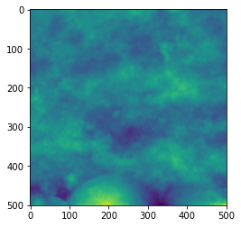
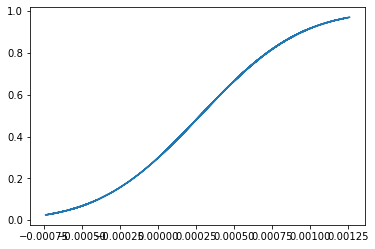
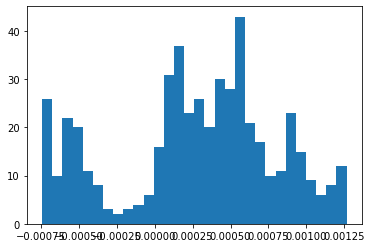
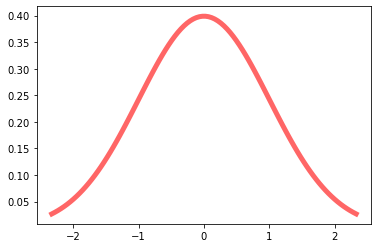

image = np.loadtxt('example.txt')
profiles = np.loadtxt('example_profiles.txt')Profile
Set of functions for calculating roughness parameters along profiles
To demonstrate, we’re going to build on the data we processed in data
plt.imshow(image)
plt.show()
Statistical Parameters
The following methods are statistical in nature, providing a single number as a broad description of the distribution of the height values.
Ra
Ra (im, axis=1, norm=True)
Calculates Mean Absolute Roughness (Ra) along given axis. Defined as the average deviation of absolute height values from the mean line.
| Type | Default | Details | |
|---|---|---|---|
| im | Numpy array or arraylike | ||
| axis | int | 1 | Default to Ra of rows |
| norm | bool | True | Normalize the profile by subtracting the mean |
Ra(image)[:5]array([0.00042114, 0.0004146 , 0.00040444, 0.00039162, 0.00037649])Remember, if you just want the parameters of a certain profile, you just index into your image and be mindful of the axis.
first_row_profile = image[0,:]
first_column_profile = image[:,0]
Ra(first_column_profile, axis = 0)0.00043905629459996097Rms
Rms (im, axis=1, norm=True)
Calculates Root Mean Square Roughness (Rms) along given axis. Defined as the root mean square of deviations of height from the mean line of a given profile.
| Type | Default | Details | |
|---|---|---|---|
| im | Numpy array or array like | ||
| axis | int | 1 | Default to Rms of rows |
| norm | bool | True | Normalize the profile by subtracting the mean |
Rms(image)[:5]array([0.0005232 , 0.00051211, 0.00049625, 0.00047939, 0.00046217])Rsk
Rsk (im, axis=1, norm=True, **kwargs)
Calcultes the Skew (Rsk) along given axis. Thin wrapper around scipy.stats.skew with bias set to False
| Type | Default | Details | |
|---|---|---|---|
| im | Numpy array or array like | ||
| axis | int | 1 | Default to Skew of rows |
| norm | bool | True | Normalize the profile by subtracting the mean |
| kwargs |
Rsk(image)[:5]array([-0.34102473, -0.34162509, -0.33785933, -0.32203996, -0.2844012 ])Rku
Rku (im, axis=1, norm=True, **kwargs)
Calculates the Kurtosis (Rku) along given axis. This wrapper around scipy.stats.kurtosis
| Type | Default | Details | |
|---|---|---|---|
| im | Numpy array or array like | ||
| axis | int | 1 | Default to Kurtosis of rows |
| norm | bool | True | Normalize the profile by subtracting the mean |
| kwargs |
Rku(image)[:5]array([-0.67518082, -0.7123575 , -0.75156931, -0.76424118, -0.74213074])Rp
Rp (im, axis=1, norm=True, **kwargs)
Calculates the peak height of the profile.
| Type | Default | Details | |
|---|---|---|---|
| im | Numpy array or array like | ||
| axis | int | 1 | Default to peaks of rows |
| norm | bool | True | Normalize the profile by subtracting the mean |
| kwargs |
Rv
Rv (im, axis=1, norm=True, **kwargs)
Calculates the absolute max valley depth of the profile.
| Type | Default | Details | |
|---|---|---|---|
| im | Numpy array or array like | ||
| axis | int | 1 | Default to peaks of rows |
| norm | bool | True | Normalize the profile by subtracting the mean |
| kwargs |
Rz
Rz (im, axis=1, norm=True, **kwargs)
Calculates the maximum height (max height + absolute max depth) of the profile. Synonymous with range. Also called Rt
| Type | Default | Details | |
|---|---|---|---|
| im | Numpy array or array like | ||
| axis | int | 1 | Default to peaks of rows |
| norm | bool | True | Normalize the profile by subtracting the mean |
| kwargs |
## Texture Parametersdef local_max_min(im,
axis = 1,
norm = True,
**kwargs
):
'''
Returns the number of local maxima and minima per unit length, also known as the density of extremes from Nayak (1971).
Assumes the surface is random, with a gaussian distribution of heights (usually pretty safe).
'''
if norm:
im = im - np.mean(im, axis = axis, keepdims = True)
m2 = moment(im, moment=2, axis = axis)
m4 = moment(im, moment=4, axis = axis)
return (1/math.pi) * ((m4/m2)**(1/2))def Sds(im,
axis = 1,
norm = True,
**kwargs
):
'''
Density of summits, as described by Nayak (1971).
Assumes gaussian, isotropic surface.
'''
m2 = moment(im, moment=2, axis = axis)
m4 = moment(im, moment=4, axis = axis)
return (1 / (6 * math.pi * (3**(1/2)))) * (m4/m2)Sds(image)array([1.94925116e-08, 1.83759885e-08, 1.69600203e-08, 1.57376224e-08,
1.47721105e-08, 1.41187821e-08, 1.37611040e-08, 1.34290580e-08,
1.29276764e-08, 1.23666839e-08, 1.18297973e-08, 1.13012382e-08,
1.06949448e-08, 9.96241817e-09, 9.20056523e-09, 8.54169206e-09,
8.13197494e-09, 7.92167484e-09, 7.72233601e-09, 7.44147308e-09,
7.20464056e-09, 7.16168132e-09, 7.30183438e-09, 7.48230718e-09,
7.66921800e-09, 7.88896781e-09, 8.06797688e-09, 8.07306313e-09,
7.92745200e-09, 7.70990169e-09, 7.52410251e-09, 7.52048515e-09,
7.74437594e-09, 8.06943248e-09, 8.25553321e-09, 8.20078847e-09,
7.98095757e-09, 7.69064353e-09, 7.44539834e-09, 7.28363005e-09,
7.15245870e-09, 7.04371614e-09, 6.98843369e-09, 7.03629638e-09,
7.18705409e-09, 7.35724872e-09, 7.39625415e-09, 7.27723207e-09,
7.14163420e-09, 7.07995996e-09, 7.06053345e-09, 7.11344971e-09,
7.26294110e-09, 7.37932950e-09, 7.36470777e-09, 7.29613438e-09,
7.27515872e-09, 7.26436522e-09, 7.10914231e-09, 6.82349361e-09,
6.50851934e-09, 6.24685544e-09, 6.14665211e-09, 6.29974387e-09,
6.63823425e-09, 7.07680740e-09, 7.59826767e-09, 8.14689207e-09,
8.62896658e-09, 9.02315511e-09, 9.32291377e-09, 9.54751944e-09,
9.76743679e-09, 9.89451135e-09, 9.77830994e-09, 9.36820138e-09,
8.77212611e-09, 8.26698303e-09, 8.05691148e-09, 8.18608167e-09,
8.52952670e-09, 9.02127456e-09, 9.74798109e-09, 1.05576661e-08,
1.11373532e-08, 1.13902211e-08, 1.14172364e-08, 1.12768747e-08,
1.11877512e-08, 1.13489211e-08, 1.17535326e-08, 1.23244415e-08,
1.29465299e-08, 1.34730848e-08, 1.37596681e-08, 1.36231817e-08,
1.30523212e-08, 1.22601577e-08, 1.15756715e-08, 1.11945068e-08,
1.11986800e-08, 1.15527688e-08, 1.19799725e-08, 1.23121499e-08,
1.25734361e-08, 1.28249068e-08, 1.31322217e-08, 1.34202798e-08,
1.35595607e-08, 1.34823934e-08, 1.30867068e-08, 1.23655358e-08,
1.15113561e-08, 1.07716161e-08, 1.02843345e-08, 1.00343558e-08,
9.96705184e-09, 1.00337672e-08, 1.02606938e-08, 1.07592634e-08,
1.14189485e-08, 1.19866288e-08, 1.22856142e-08, 1.23180775e-08,
1.22592521e-08, 1.23050904e-08, 1.24665624e-08, 1.25871723e-08,
1.25206880e-08, 1.22427819e-08, 1.19036771e-08, 1.16893561e-08,
1.16093815e-08, 1.15178985e-08, 1.13024203e-08, 1.09358603e-08,
1.05388882e-08, 1.02522510e-08, 1.00388996e-08, 9.78701629e-09,
9.53468080e-09, 9.55429184e-09, 1.00463798e-08, 1.09492227e-08,
1.20470599e-08, 1.30196415e-08, 1.35950868e-08, 1.38843001e-08,
1.41604266e-08, 1.45958571e-08, 1.51574183e-08, 1.55576201e-08,
1.56294907e-08, 1.55215596e-08, 1.54723487e-08, 1.55465724e-08,
1.57558444e-08, 1.61786845e-08, 1.68419582e-08, 1.77694838e-08,
1.88322287e-08, 1.95668590e-08, 1.95620333e-08, 1.88189717e-08,
1.76883064e-08, 1.65107453e-08, 1.53962631e-08, 1.43774865e-08,
1.34668849e-08, 1.26069462e-08, 1.17761858e-08, 1.10657382e-08,
1.06177721e-08, 1.03788365e-08, 1.02233815e-08, 1.01367470e-08,
1.01599480e-08, 1.03797501e-08, 1.08559633e-08, 1.15238513e-08,
1.22361643e-08, 1.27861520e-08, 1.29986714e-08, 1.30391488e-08,
1.31436398e-08, 1.32153411e-08, 1.31200809e-08, 1.29608831e-08,
1.29444356e-08, 1.30535552e-08, 1.32161606e-08, 1.36739123e-08,
1.46669239e-08, 1.62144532e-08, 1.79252069e-08, 1.89927666e-08,
1.91332939e-08, 1.90084946e-08, 1.92410158e-08, 1.97048960e-08,
1.99925209e-08, 1.99654352e-08, 1.96858218e-08, 1.93504341e-08,
1.91110699e-08, 1.88364253e-08, 1.83793662e-08, 1.77179044e-08,
1.69299436e-08, 1.63317398e-08, 1.62465581e-08, 1.66834519e-08,
1.74009257e-08, 1.81164128e-08, 1.86016339e-08, 1.87460314e-08,
1.86288041e-08, 1.84254854e-08, 1.82303148e-08, 1.78536091e-08,
1.70482951e-08, 1.58387003e-08, 1.45466962e-08, 1.34749467e-08,
1.26485788e-08, 1.21369769e-08, 1.19537113e-08, 1.19937201e-08,
1.21965960e-08, 1.23701849e-08, 1.23587170e-08, 1.21656001e-08,
1.18375273e-08, 1.14075995e-08, 1.08913272e-08, 1.03663443e-08,
9.82552225e-09, 9.13372521e-09, 8.28366828e-09, 7.55894379e-09,
7.37782053e-09, 7.80819665e-09, 8.55998834e-09, 9.35596052e-09,
9.96999532e-09, 1.04128492e-08, 1.09232754e-08, 1.16780784e-08,
1.26368634e-08, 1.35481494e-08, 1.42955437e-08, 1.49675679e-08,
1.56988070e-08, 1.66576143e-08, 1.77726802e-08, 1.86910116e-08,
1.92165683e-08, 1.94923395e-08, 1.97110559e-08, 1.96447106e-08,
1.89704709e-08, 1.77203441e-08, 1.62210498e-08, 1.48032623e-08,
1.36245114e-08, 1.26634228e-08, 1.18801534e-08, 1.13451432e-08,
1.11999041e-08, 1.14585991e-08, 1.19705679e-08, 1.24961920e-08,
1.28348825e-08, 1.29338597e-08, 1.29675359e-08, 1.31351827e-08,
1.34082234e-08, 1.36333973e-08, 1.37160789e-08, 1.37101549e-08,
1.36856817e-08, 1.36941282e-08, 1.38998068e-08, 1.44196016e-08,
1.50895638e-08, 1.55620192e-08, 1.57051025e-08, 1.56855153e-08,
1.56586316e-08, 1.56478628e-08, 1.56688027e-08, 1.57247026e-08,
1.57592523e-08, 1.58311450e-08, 1.61494420e-08, 1.68424602e-08,
1.78297004e-08, 1.88775418e-08, 1.97936252e-08, 2.06428952e-08,
2.16720687e-08, 2.30384429e-08, 2.46506277e-08, 2.62517279e-08,
2.77249861e-08, 2.91267551e-08, 3.04069207e-08, 3.12735755e-08,
3.15924164e-08, 3.17307410e-08, 3.21071361e-08, 3.28116397e-08,
3.37125468e-08, 3.44843763e-08, 3.49851807e-08, 3.53682158e-08,
3.57981932e-08, 3.62056562e-08, 3.64645139e-08, 3.67053834e-08,
3.70060677e-08, 3.69970557e-08, 3.63695278e-08, 3.53242205e-08,
3.41878981e-08, 3.31805052e-08, 3.24107801e-08, 3.19990831e-08,
3.20216336e-08, 3.22451388e-08, 3.23279544e-08, 3.22131408e-08,
3.19935179e-08, 3.17474070e-08, 3.16729269e-08, 3.19303528e-08,
3.23409817e-08, 3.26332080e-08, 3.27885650e-08, 3.29015084e-08,
3.31443724e-08, 3.35750171e-08, 3.40650206e-08, 3.42035189e-08,
3.37473920e-08, 3.29623112e-08, 3.21641905e-08, 3.13678304e-08,
3.03962090e-08, 2.91354276e-08, 2.75572949e-08, 2.58879532e-08,
2.44929491e-08, 2.33982454e-08, 2.24924642e-08, 2.17893345e-08,
2.12040915e-08, 2.07346537e-08, 2.03204081e-08, 1.97678931e-08,
1.90239631e-08, 1.81012154e-08, 1.69202992e-08, 1.55299087e-08,
1.42612124e-08, 1.32526644e-08, 1.24033982e-08, 1.17807325e-08,
1.15379604e-08, 1.18548851e-08, 1.26614315e-08, 1.35693224e-08,
1.43228036e-08, 1.49518694e-08, 1.55868480e-08, 1.63467255e-08,
1.71526140e-08, 1.78565715e-08, 1.84708027e-08, 1.88332965e-08,
1.87838517e-08, 1.86285453e-08, 1.88889678e-08, 1.93799750e-08,
1.93220840e-08, 1.86754137e-08, 1.77653865e-08, 1.67761387e-08,
1.60225128e-08, 1.56048016e-08, 1.53004720e-08, 1.50249635e-08,
1.49508710e-08, 1.52007362e-08, 1.57163508e-08, 1.63810547e-08,
1.70475619e-08, 1.75080585e-08, 1.75796129e-08, 1.71836343e-08,
1.66769810e-08, 1.64418344e-08, 1.63033148e-08, 1.59762721e-08,
1.54719055e-08, 1.50023077e-08, 1.47116568e-08, 1.45517403e-08,
1.43648849e-08, 1.41231710e-08, 1.39873101e-08, 1.39904224e-08,
1.40351881e-08, 1.39710950e-08, 1.36741561e-08, 1.33083598e-08,
1.29929704e-08, 1.25765598e-08, 1.17668843e-08, 1.05319372e-08,
9.50074959e-09, 9.24661525e-09, 9.78793615e-09, 1.08209837e-08,
1.20327466e-08, 1.31874454e-08, 1.42162188e-08, 1.53608215e-08,
1.66589277e-08, 1.78847122e-08, 1.88965716e-08, 1.96292907e-08,
2.00872154e-08, 2.03325147e-08, 2.02547004e-08, 1.97210011e-08,
1.88203203e-08, 1.79200191e-08, 1.72461037e-08, 1.67849066e-08,
1.67068664e-08, 1.71379023e-08, 1.79437980e-08, 1.89608672e-08,
2.02245242e-08, 2.19178800e-08, 2.40623803e-08, 2.65171090e-08,
2.93101586e-08, 3.25889145e-08, 3.63573329e-08, 4.04757472e-08,
4.46484718e-08, 4.86839121e-08, 5.27051034e-08, 5.66756207e-08,
6.00670537e-08, 6.25546179e-08, 6.43768081e-08, 6.57322923e-08,
6.67847627e-08, 6.75795557e-08, 6.82851755e-08, 6.90616225e-08,
6.99164352e-08, 7.09537085e-08, 7.22608101e-08, 7.38361376e-08,
7.57716716e-08, 7.81753202e-08, 8.08413256e-08, 8.34915742e-08,
8.58995067e-08, 8.80331486e-08, 9.00596321e-08, 9.21150094e-08,
9.43361432e-08, 9.64800881e-08, 9.81018570e-08, 9.93435800e-08,
1.00869702e-07, 1.03194011e-07, 1.06179733e-07, 1.09473431e-07,
1.12594851e-07, 1.14992912e-07, 1.16430587e-07, 1.17572262e-07,
1.19363421e-07, 1.21953154e-07, 1.25123773e-07, 1.28755392e-07,
1.33246899e-07, 1.38845984e-07, 1.45155921e-07, 1.51665582e-07,
1.58198642e-07, 1.64838581e-07, 1.71537759e-07, 1.78745521e-07,
1.85497200e-07])from scipy.stats import normnorm.stats(moments='mvsk')(array(0.), array(1.), array(0.), array(0.))loc, scale = norm.fit(image[0])pdf = norm.pdf(image[0],loc=loc,scale=scale)
cdf = norm.cdf(image[0],loc=loc,scale=scale)fig, ax = plt.subplots(1, 1)
ax.plot(image[0],cdf)
fig, ax = plt.subplots(1, 1)
ax.hist(image[0],bins=30)(array([26., 10., 22., 20., 11., 8., 3., 2., 3., 4., 6., 16., 31.,
37., 23., 26., 20., 30., 28., 43., 21., 17., 10., 11., 23., 15.,
9., 6., 8., 12.]),
array([-7.41222638e-04, -6.74375644e-04, -6.07528649e-04, -5.40681655e-04,
-4.73834661e-04, -4.06987667e-04, -3.40140673e-04, -2.73293679e-04,
-2.06446684e-04, -1.39599690e-04, -7.27526960e-05, -5.90570179e-06,
6.09412924e-05, 1.27788287e-04, 1.94635281e-04, 2.61482275e-04,
3.28329269e-04, 3.95176263e-04, 4.62023257e-04, 5.28870252e-04,
5.95717246e-04, 6.62564240e-04, 7.29411234e-04, 7.96258228e-04,
8.63105223e-04, 9.29952217e-04, 9.96799211e-04, 1.06364621e-03,
1.13049320e-03, 1.19734019e-03, 1.26418719e-03]),
<BarContainer object of 30 artists>)
fig, ax = plt.subplots(1, 1)
x = np.linspace(norm.ppf(0.01),
norm.ppf(0.99), 100)
ax.plot(x, norm.pdf(x),
'r-', lw=5, alpha=0.6, label='norm pdf')